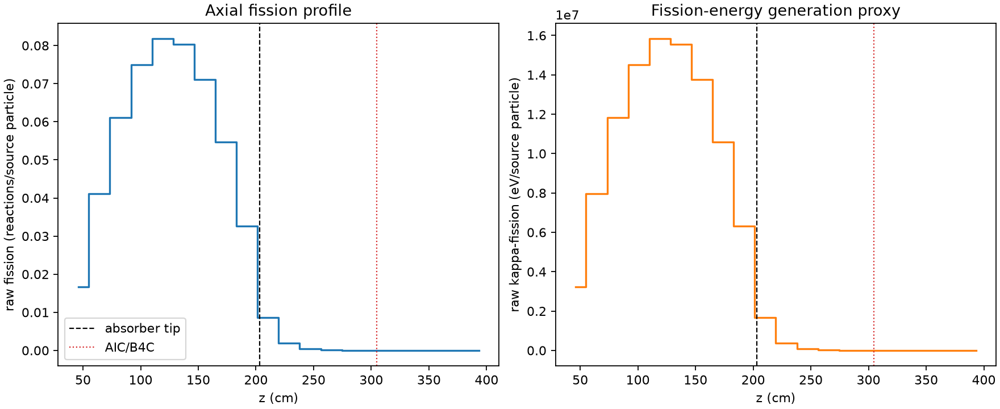
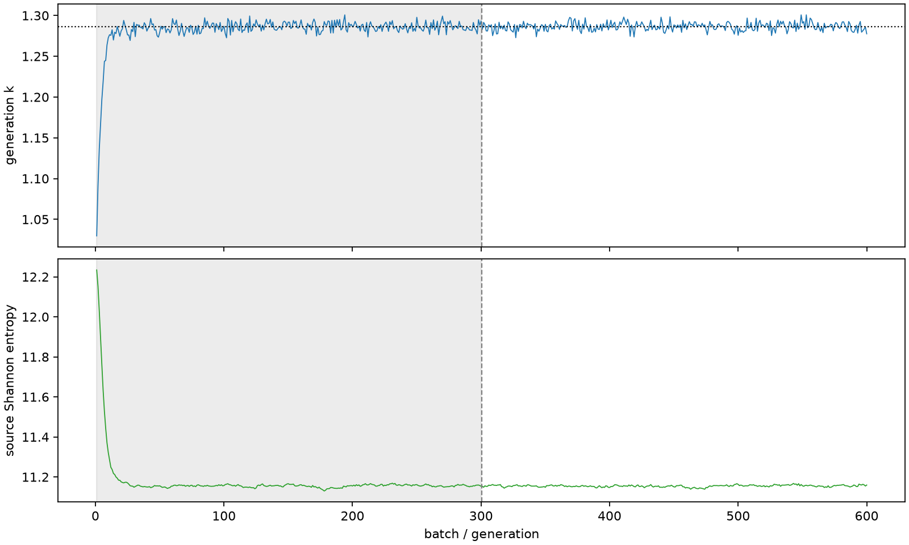

| field | value |
|---|---|
| experiment | V2-STAGE_128_OGRENCI_03-0007 |
| k | 1.286466418631577 |
| MC standard error | 0.00018184353219858964 |
| seconds | 940.7355655120045 |
| acceptance | not_assessed |
| convergence | review_required |
Completed is output integrity only; physical and statistical review required. Zero tallies do not prove zero production or zero uncertainty.
| diagnostic | value |
|---|---|
| geometric fuel voxels | 5280 |
| zero fission tally voxels | 898 |
| low signal fuel voxels | 1850 |
| low signal fission share | 7.559078125436212e-05 |
| low signal kappa share | 7.56183391893078e-05 |
| important fission share | 0.9500038840201249 |
| previous filter included | 3430 |
| duration estimate s | 1562.5173488400023 |
| actual minus estimate s | -621.7817833279978 |
| fission relative MC error | statistics |
|---|---|
| all_geometric_fuel | {"voxels": 5280, "positive_mean_voxels": 4382, "zero_mean_voxels": 898, "undefined_relative_error_voxels": 898, "median": 0.013148677938255778, "p95": 0.8070396927678769, "maximum": 1.0000000000000002} |
| low_signal | {"voxels": 1850, "positive_mean_voxels": 952, "zero_mean_voxels": 898, "undefined_relative_error_voxels": 898, "median": 0.5324587741187709, "p95": 1.0, "maximum": 1.0000000000000002} |
| important_95pct | {"voxels": 2136, "positive_mean_voxels": 2136, "zero_mean_voxels": 0, "undefined_relative_error_voxels": 0, "median": 0.007003503809399056, "p95": 0.01018100385209628, "maximum": 0.0149291433254894} |
| outside_previous_filter | {"voxels": 1850, "positive_mean_voxels": 952, "zero_mean_voxels": 898, "undefined_relative_error_voxels": 898, "median": 0.5324587741187709, "p95": 1.0, "maximum": 1.0000000000000002} |
| kappa_fission relative MC error | statistics |
|---|---|
| all_geometric_fuel | {"voxels": 5280, "positive_mean_voxels": 4382, "zero_mean_voxels": 898, "undefined_relative_error_voxels": 898, "median": 0.01313466109130704, "p95": 0.8069602020568429, "maximum": 1.0000000000000002} |
| low_signal | {"voxels": 1850, "positive_mean_voxels": 952, "zero_mean_voxels": 898, "undefined_relative_error_voxels": 898, "median": 0.5321562443851852, "p95": 1.0, "maximum": 1.0000000000000002} |
| important_95pct | {"voxels": 2136, "positive_mean_voxels": 2136, "zero_mean_voxels": 0, "undefined_relative_error_voxels": 0, "median": 0.00699623339381376, "p95": 0.01017047839728025, "maximum": 0.014913890583210961} |
| outside_previous_filter | {"voxels": 1850, "positive_mean_voxels": 952, "zero_mean_voxels": 898, "undefined_relative_error_voxels": 898, "median": 0.5321562443851852, "p95": 1.0, "maximum": 1.0000000000000002} |
| axial bin | fission share | kappa-fission share |
|---|---|---|
| 1 | 0.03177111883905658 | 0.03177231075477283 |
| 2 | 0.07830548399601665 | 0.07830502711882045 |
| 3 | 0.11629713206155363 | 0.11629631810503095 |
| 4 | 0.14276090702183833 | 0.14276001008369774 |
| 5 | 0.15556887587867704 | 0.15556770159689445 |
| 6 | 0.15279024652599885 | 0.1527890488261828 |
| 7 | 0.13532184273292938 | 0.13532072270455653 |
| 8 | 0.10393631064115887 | 0.10393550375105441 |
| 9 | 0.06197069976663197 | 0.061970418125859836 |
| 10 | 0.01633784696475943 | 0.016341721340475998 |
| 11 | 0.003709438656941583 | 0.003710705314074526 |
| 12 | 0.0009251924908957619 | 0.0009255037304834186 |
| 13 | 0.00023070759068213577 | 0.0002307849383176735 |
| 14 | 5.532758369987205e-05 | 5.534470295715152e-05 |
| 15 | 1.504710467699946e-05 | 1.5054232361851121e-05 |
| 16 | 3.471290087428526e-06 | 3.4736266820340474e-06 |
| 17 | 3.5069648303903105e-07 | 3.508897469772063e-07 |
| 18 | 1.5791257830806406e-10 | 1.580303380222036e-10 |
| 19 | 0.0 | 0.0 |
| 20 | 0.0 | 0.0 |
Histories include the inactive-to-active transition at batch 300. kappa-fission approximates fission energy production, not total heat deposition.

